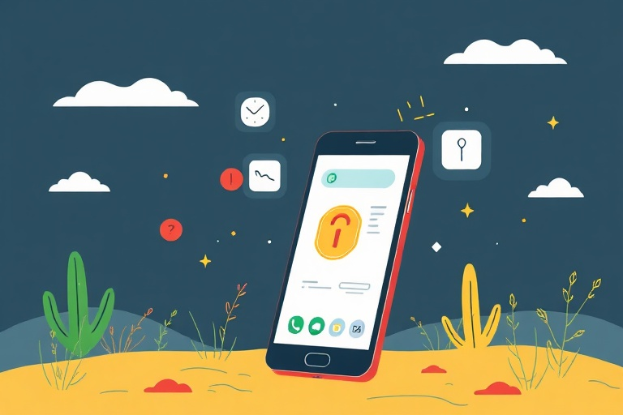

আপনার অ্যান্ড্রয়েড ফোন নিরাপদ ও দ্রুত রাখার সহজ কিছু টিপস
Category: mobile | Language: bn
ভারতের অধিকাংশ মানুষ এখন অ্যান্ড্রয়েড স্মার্টফোন ব্যবহার করেন, কিন্তু ফোন কেনার পর আমরা অনেক সময়ই এর সেটিংসে সঠিক নজর দিই না। এই নিবন্ধটি মূলত সেই সব নতুন ব্যবহারকারীদের জন্য যারা তাদের ফোনের গোপনীয়তা (privacy) এবং কার্যক্ষমতা বাড়াতে চান। স্মার্টফোনের সেটিংস সঠিকভাবে জানলে শুধু যে আপনার ব্যক্তিগত তথ্য সুরক্ষিত থাকবে তাই নয়, ফোনের ব্যাটারি এবং স্টোরেজও অনেক বেশিদিন ভালো থাকবে। তবে মনে রাখবেন, বিভিন্ন ব্র্যান্ড যেমন স্যামসাং, রেডমি বা রিয়েলমি এবং অ্যান্ড্রয়েড ভার্সন অনুযায়ী অপশনগুলোর নাম বা মেনু কিছুটা আলাদা হতে পারে, তাই সার্চ অপশনটি ব্যবহার করা বুদ্ধিমানের কাজ হবে।
আপনার ফোনে ইনস্টল করা প্রতিটি অ্যাপ আপনার ক্যামেরা, মাইক্রোফোন বা কন্টাক্ট লিস্ট ব্যবহারের অনুমতি চায়। অনেক সময় একটি সাধারণ ক্যালকুলেটর বা টর্চ অ্যাপও আপনার কন্টাক্ট লিস্ট বা লোকেশন জানতে চায়, যার কোনো যৌক্তিক প্রয়োজন নেই। এটি নিয়ন্ত্রণ করতে ফোনের Settings > Apps > Permission Manager-এ যান। সেখানে দেখুন কোন অ্যাপ অপ্রয়োজনীয় অনুমতি নিয়ে রেখেছে এবং সেগুলো ম্যানুয়ালি বন্ধ করে দিন। বিশেষ করে 'Always Allow' অপশনটি সরিয়ে 'Allow only while using the app' সেট করা অনেক বেশি নিরাপদ। এটি করলে অ্যাপটি বন্ধ থাকা অবস্থায় আপনার অজান্তে কোনো তথ্য সংগ্রহ করতে পারবে না।
ফোনের সুরক্ষা বজায় রাখতে নিয়মিত সফটওয়্যার আপডেট করা অত্যন্ত জরুরি। গুগল এবং ফোন প্রস্তুতকারক সংস্থাগুলো নিয়মিত 'Security Patch' পাঠায় যা নতুন ধরণের ভাইরাস বা হ্যাকারদের আক্রমণ থেকে আপনার ফোনকে বাঁচায়। Settings > Software Update-এ গিয়ে মাসে অন্তত একবার চেক করুন কোনো আপডেট বাকি আছে কিনা। এর পাশাপাশি Google Play Store-এ গিয়ে প্রোফাইল আইকনে ক্লিক করে 'Play Protect' অপশনটি চালু রাখুন। এটি নিয়মিত আপনার ফোনের অ্যাপগুলো স্ক্যান করে দেখে যে কোনো ক্ষতিকারক বা ম্যালওয়্যারযুক্ত অ্যাপ আপনার সিস্টেমে লুকিয়ে আছে কিনা।
ব্যাটারি দ্রুত ফুরিয়ে যাওয়া একটি সাধারণ সমস্যা, যা কিছু ছোট পরিবর্তনের মাধ্যমে কমানো সম্ভব। আপনার ফোনের Settings > Display-তে গিয়ে 'Dark Mode' ব্যবহার শুরু করুন। এটি বিশেষ করে AMOLED স্ক্রিনের ফোনে অনেক বিদ্যুৎ সাশ্রয় করে কারণ কালো পিক্সেলগুলো জ্বালাতে ফোনের শক্তির প্রয়োজন হয় না। এছাড়া Settings > Battery-তে গিয়ে দেখুন কোন অ্যাপগুলো ব্যাকগ্রাউন্ডে সবচেয়ে বেশি চার্জ খরচ করছে। অপ্রয়োজনীয় অ্যাপের 'Background Data' বা 'Auto-launch' বন্ধ করে দিলে ব্যাটারি ব্যাকআপ উল্লেখযোগ্যভাবে বৃদ্ধি পায়। স্ক্রিন ব্রাইটনেস সবসময় ফুল না রেখে 'Adaptive Brightness' মোডে রাখলে তা পারিপার্শ্বিক আলো অনুযায়ী নিজে থেকেই নিয়ন্ত্রিত হবে।
ফোনের স্টোরেজ বা মেমোরি ভরে গেলে ফোন হ্যাং হতে শুরু করে এবং অ্যাপ খুলতে দেরি হয়। এর জন্য মাঝে মাঝে 'Cache' বা অস্থায়ী ফাইল পরিষ্কার করা দরকার। আপনি Google-এর তৈরি 'Files by Google' অ্যাপটি ব্যবহার করতে পারেন যা ডুপ্লিকেট ফাইল, বড় ভিডিও বা ঝাপসা ছবি শনাক্ত করে সেগুলো ডিলিট করার পরামর্শ দেয়। হোয়াটসঅ্যাপের সেটিংস থেকে 'Media Visibility' বন্ধ রাখলে অপ্রয়োজনীয় ফরওয়ার্ড করা ছবি বা ভিডিও সরাসরি গ্যালারিতে জমা হবে না। এতে আপনার ফোনের মেমোরি অনেকদিন খালি থাকবে এবং প্রসেসরের ওপর চাপ কম পড়ায় ফোন দ্রুত কাজ করবে।
লোকেশন ট্র্যাকিং বা আপনার অবস্থান জানার অনুমতি অনেক অ্যাপের গোপনীয়তার জন্য হুমকিস্বরূপ। আমরা অজান্তেই অনেক অ্যাপকে আমাদের সারাদিনের গতিবিধি ট্র্যাক করার অনুমতি দিয়ে দিই। এটি নিয়ন্ত্রণ করতে Settings > Location-এ যান। এখানে আপনি দেখতে পাবেন কোন কোন অ্যাপ সম্প্রতি আপনার লোকেশন অ্যাক্সেস করেছে। যদি কোনো অ্যাপের লোকেশন জানার দরকার না থাকে, তবে সেটি বন্ধ করুন। এছাড়াও 'Google Location History' অপশনটি বন্ধ রাখলে গুগল আপনার যাতায়াতের ম্যাপ তৈরি করতে পারবে না। আপনার ব্যক্তিগত নিরাপত্তা এবং ব্যাটারি—উভয় ক্ষেত্রেই এটি একটি অত্যন্ত কার্যকর পদক্ষেপ।
ইন্টারনেট থেকে সরাসরি কোনো APK ফাইল ডাউনলোড করা অত্যন্ত ঝুঁকিপূর্ণ হতে পারে। অনেক সময় লোভনীয় অফার বা ফ্রিতে দামী অ্যাপ দেওয়ার নাম করে বিভিন্ন থার্ড-পার্টি ওয়েবসাইট থেকে ফাইল ডাউনলোড করতে বলা হয়। এই ফাইলগুলোতে ম্যালওয়্যার বা স্পাইওয়্যার থাকতে পারে যা আপনার ব্যাঙ্কিং তথ্য চুরি করতে সক্ষম। সবসময় শুধুমাত্র Google Play Store থেকেই অ্যাপ ডাউনলোড করুন। এছাড়া অপরিচিত নম্বর থেকে হোয়াটসঅ্যাপ বা মেসেজে আসা কোনো লিঙ্কে ক্লিক করবেন না। যদি কোনো অ্যাপ আপনার কাছে এমন কোনো ওটিপি (OTP) চায় যা তার কাজের সাথে যুক্ত নয়, তবে তৎক্ষণাৎ সেই অ্যাপটি আনইনস্টল করে দিন।
পরিশেষে বলা যায়, স্মার্টফোন ব্যবহার করার সময় একটু সচেতন থাকলেই অনেক বড় বিপদ এড়ানো সম্ভব। একটি বাস্তব উদাহরণ হিসেবে বলা যায়, আপনি যদি আজই আপনার ফোনের অপ্রয়োজনীয় অ্যাপগুলো ডিলিট করেন এবং ডার্ক মোড অন করেন, তবে দেখবেন ফোনের গতি এবং ব্যাটারি লাইফ আগের থেকে অনেক উন্নত হয়েছে। আপনার ফোনের নিরাপত্তাই আপনার ব্যক্তিগত তথ্যের নিরাপত্তা। তাই আজই আপনার ফোনের সেটিংস একবার চেক করুন এবং অপ্রয়োজনীয় পারমিশনগুলো বন্ধ করে একটি নিরাপদ ডিজিটাল অভিজ্ঞতা নিশ্চিত করুন। পরবর্তী পদক্ষেপ হিসেবে ফোনের 'Find My Device' অপশনটি চালু আছে কিনা দেখে নিন, যা ফোন হারিয়ে গেলে খুঁজে পেতে সাহায্য করবে।